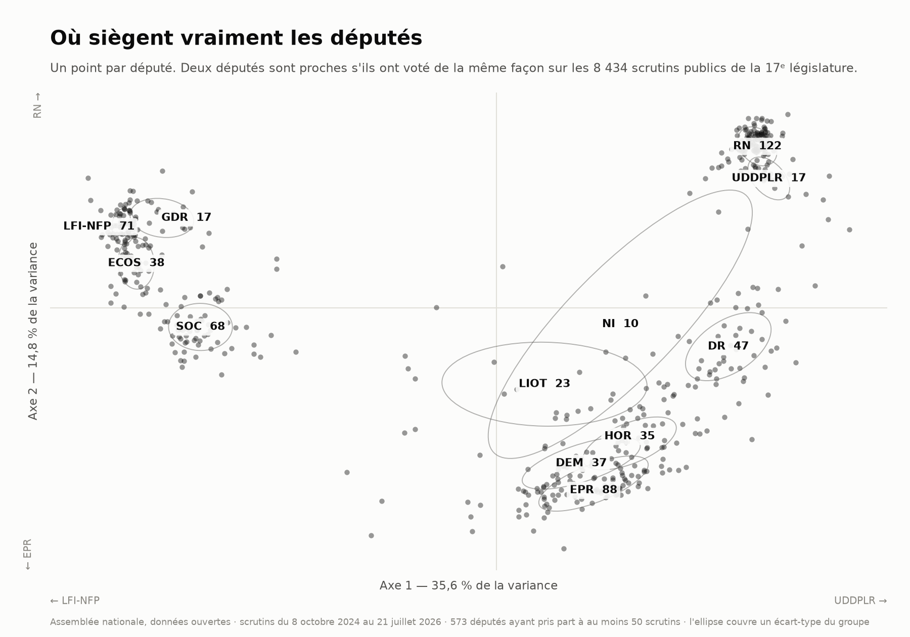
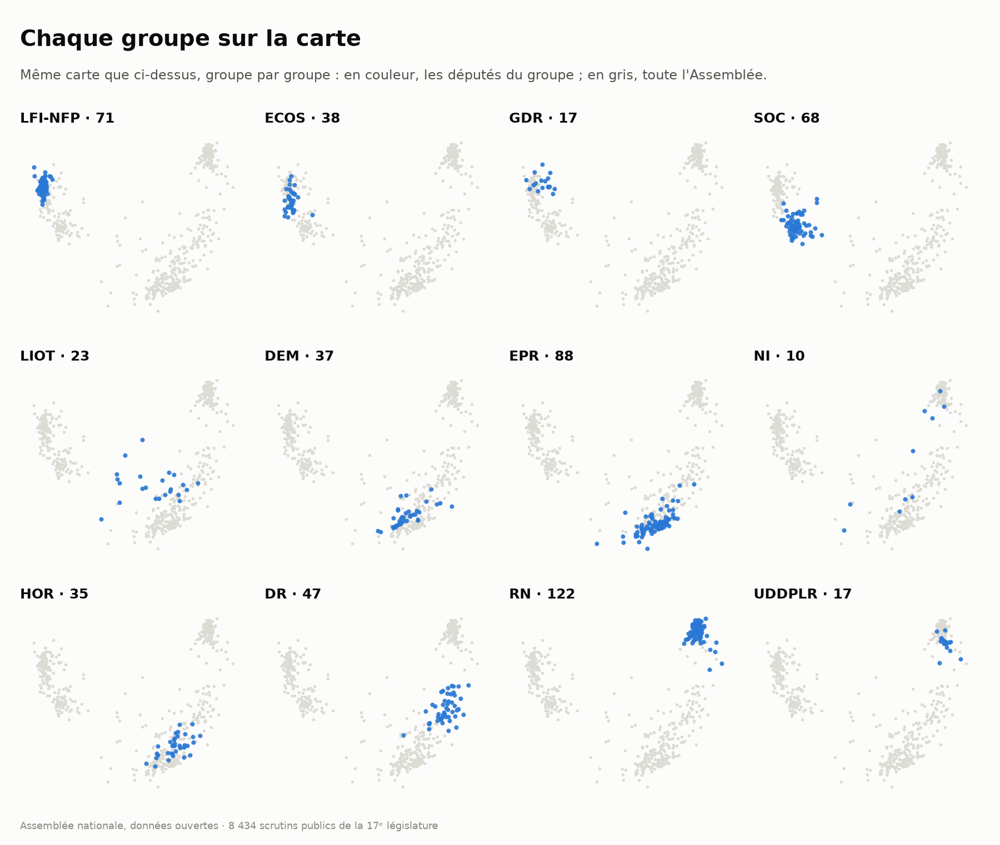

La carte des députés
Les députés placés par leurs votes, et non par leur étiquette : deux députés sont proches s'ils ont voté de la même façon.

Comment c'est calculé
Chaque scrutin public est une question posée à l'Assemblée. Pour chaque paire de députés, on mesure leur accord moyen sur les scrutins qu'ils ont votés tous les deux — pour vaut +1, contre −1, abstention 0. Les absences ne sont jamais comblées, elles sont ignorées : la participation médiane tourne autour de 130 votants sur 577, et faire voter des absents à la moyenne de leur camp reviendrait à dessiner une carte à partir de votes qui n'ont pas eu lieu. Les députés sont ensuite placés de façon que les distances à l'écran reflètent au mieux ces accords deux à deux.
Ce que les deux axes disent
Les axes ne sont pas choisis à l'avance : ils tombent du calcul. Le premier reconstitue le clivage gauche-droite sans qu'on le lui ait demandé. Le second sépare les oppositions du socle gouvernemental — il range donc les deux extrémités du premier axe du même côté, ce que l'étiquette de groupe, seule, ne laisse pas voir. C'est le « fer à cheval » que forme le nuage.
La taille de l'ellipse est la cohésion du groupe. Serrée, le groupe vote d'un bloc ; étalée, c'est que ses membres ne votent pas ensemble — le cas des non-inscrits, qui ne sont pas un groupe, et de LIOT, qui en est un sans en avoir la discipline.
Les groupes
- LFI-NFP
- La France insoumise – Nouveau Front Populaire
- ECOS
- Écologiste et Social
- GDR
- Gauche Démocrate et Républicaine
- SOC
- Socialistes et apparentés
- LIOT
- Libertés, Indépendants, Outre-mer et Territoires
- DEM
- Les Démocrates
- EPR
- Ensemble pour la République
- HOR
- Horizons & Indépendants
- DR
- Droite Républicaine
- RN
- Rassemblement National
- UDDPLR
- Union des droites pour la République
- NI
- Non inscrits

Source : données ouvertes de l'Assemblée nationale, scrutins publics de la 17e législature, régénérés chaque jour. Le code tient dans un fichier : hemicycle.py.